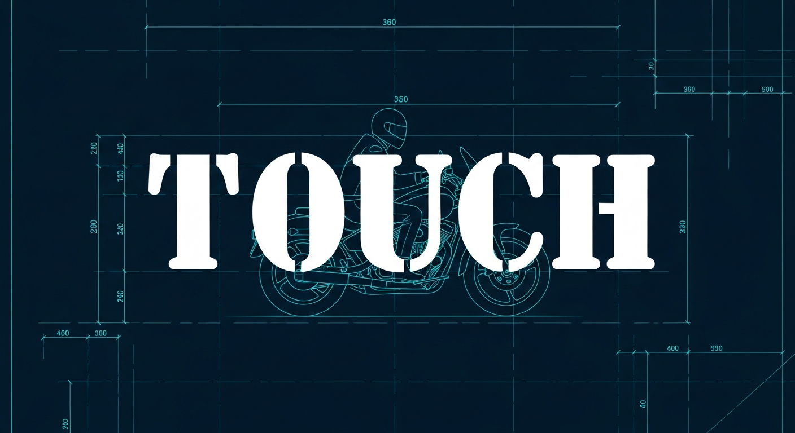
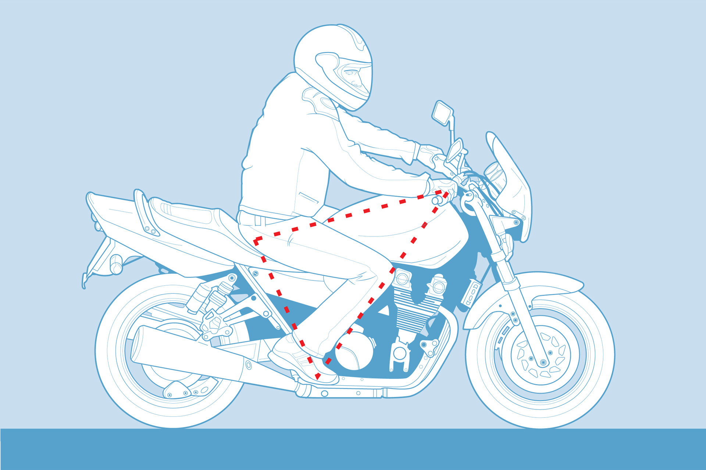
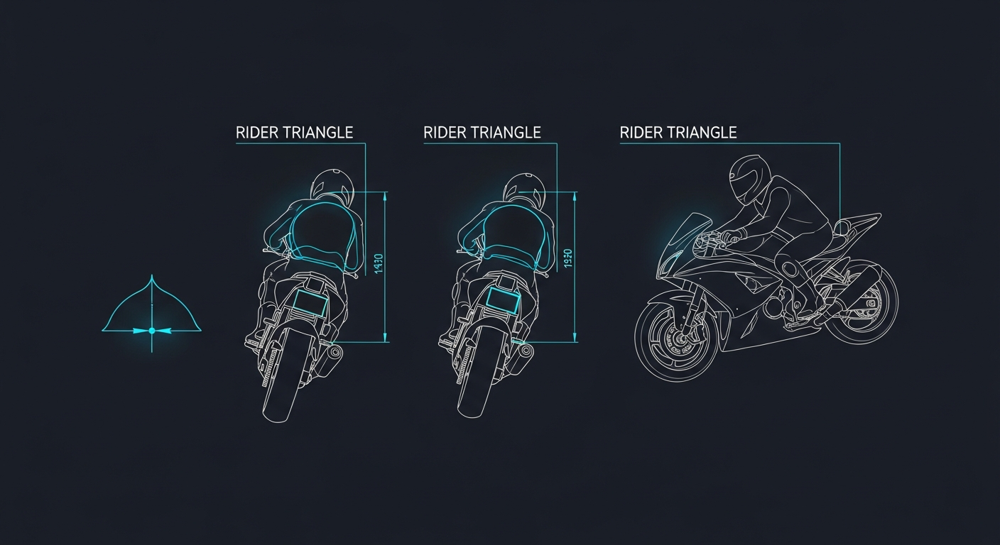
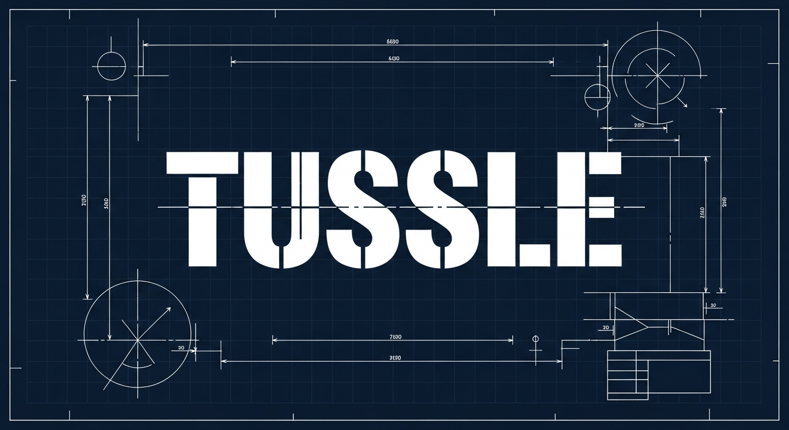
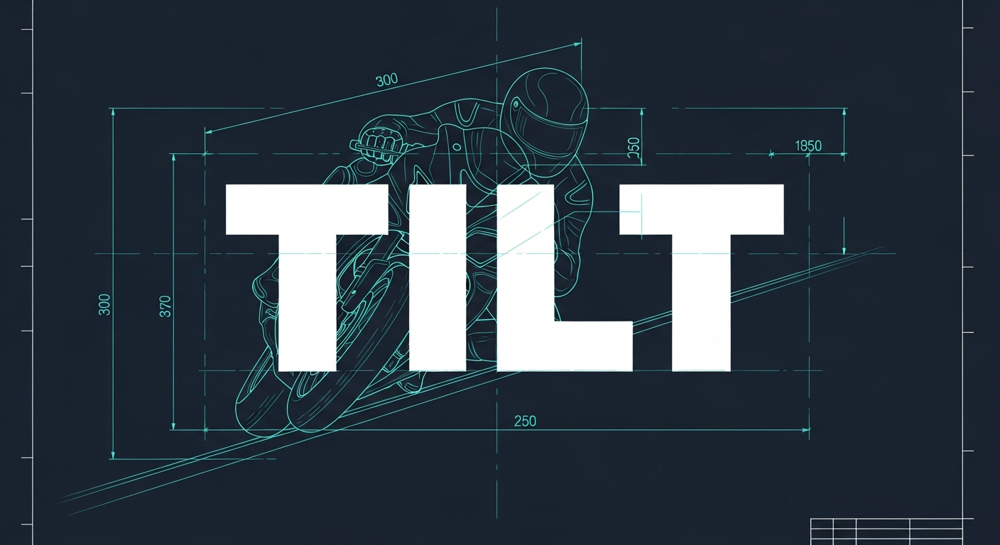
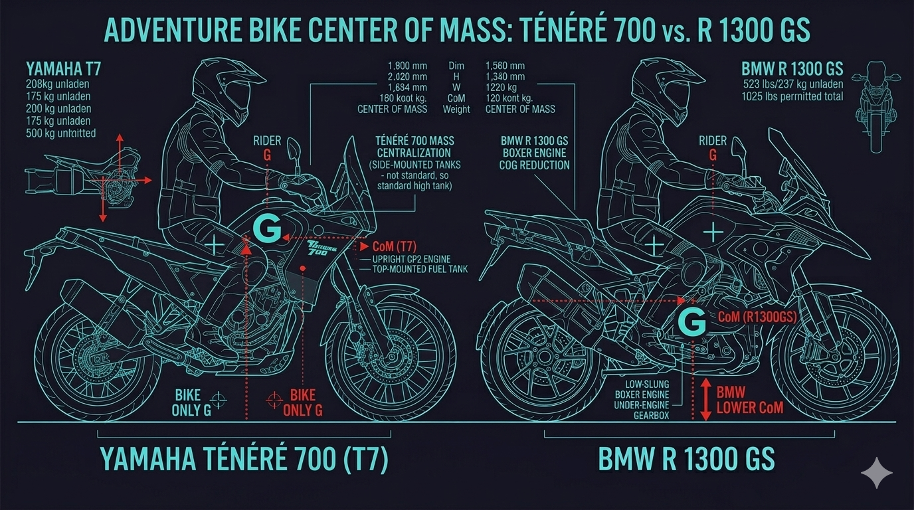

The Three T's
Before engines, before horsepower, before anyone's opinion — can your body actually sit on this bike?
Everyone talks about engine specs. Nobody talks about the first question: can my body operate this machine? I developed the Three T's to answer that.
If a bike fails any of these three tests, I don't care how many YouTubers recommend it — it's off my list.
T1: Touch

The question: Can my feet reach the ground? Can my hands comfortably reach the handlebars?
If you're stretching for either one, you'll be tired in 20 minutes. Your feet should touch the ground flat — not tippy-toes, not one foot dangling. Both feet, solid.
And your hands need to reach the bars without straining your shoulders or wrists. If you feel like you're reaching for something on a high shelf, that bike is too big.
The Rider Triangle

The technical term is the Rider Triangle — the shape formed between your hands, hips, and feet on the bike. If that triangle is wrong — too stretched, too cramped — you'll get tired fast. On a long ride, bad ergonomics cause fatigue faster than bad roads.

Different bikes create different triangles. An Upright triangle (ADV bikes) keeps your back straight for all-day comfort. A Tucked triangle (sport bikes) folds you over the tank for aerodynamics but kills your wrists. A Relaxed triangle (cruisers) pushes your feet forward — comfy at first, but your spine absorbs every bump. Read the full breakdown in The Rider Triangle.
How to test at home: Sit on a dining chair. Feet flat? Arms comfortable reaching forward? That's roughly a 780-800mm seat height. Add a cushion — that's about 810mm. Now you know your range.
T2: Tussle

The question: Can I physically move this bike when the engine is off?
There are moments when you need to push your bike. Parking. Tight spaces. Dropping it — and everyone drops their bike at some point. So can you handle 180-200kg of dead weight?
But here's the thing: it's not just about kilograms. It's about handlebar width. Wide handlebars give you leverage. Same weight, completely different effort.
Mass Centralization
The technical term is mass centralization. A heavy bike that keeps its weight tight and central is easier to handle than a lighter bike with the weight spread out. That's why some 230kg touring bikes feel easier to push than a 180kg adventure bike. The weight isn't just about the number — it's about how the manufacturer packed it in.
T3: Tilt

The question: How does the bike feel when it leans? Is the weight at my ankles or my hips?
Hold a heavy bag at your hips — stable, easy. Hold the same bag at your shoulders — you're wobbling. Same weight. Completely different experience.
A bike with a low center of gravity sits stable at stops and changes direction easily. A top-heavy bike wants to fall over the second you stop.
Moment of Inertia

The physics term is moment of inertia. Low center of gravity means the bike changes direction easily and recovers when you lean. High center of gravity means slow turns and hard to catch when it starts falling.
That's why experienced riders can flick a heavy cruiser through corners but struggle with a tall adventure bike at slow speed. It's not skill. It's physics.
The Philosophy
If a bike stops you — if it scares you, if you're fighting it — it's not for you. Your bike should make you want to ride. Not make you scared to try.
The Three T's are a filter. They don't tell you which bike to buy. They tell you which bikes to eliminate — before you waste time on test rides, before you fall in love with something that doesn't fit your body.
What's Next?
The Three T's narrow 47 categories down to a physical fit. But that's only half the answer. The other half: does the bike match your lifestyle?
That's where F.I.T.S. comes in.
Read more: The Rider Triangle | F.I.T.S. | Try the FITS Tool